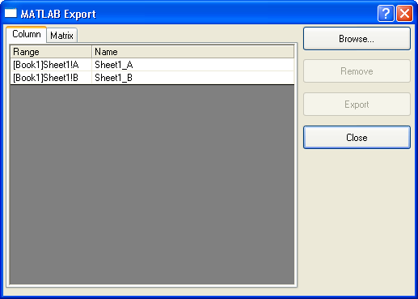

Die Schaltfläche Exportieren
Die Schaltfläche Exportieren in der oberen rechten Ecke dieses Dialogfelds öffnet das Dialogfeld MATLAB Export.
- 
Dieses Dialogfeld listet alle Variablen des aktuellen Origin-Projekts auf. Der Anwender kann mit Hilfe der Spalte Name einen Namen für die Variable in MATLAB vergeben und anschließend die gewünschten Origin-Worksheetspalten oder Matrizen auswählen und diese nach MATLAB übertragen. Die Registerkarte Spalte listet alle Variablen des Origin-Worksheets auf und die Registerkarte Matrix listet alle Variablen der Origin-Matrix auf.
- Die Schaltfläche Durchsuchen öffnet das Dialogfeld Spalten durchsuchen und Sie können manuell die Variablen auswählen, die nach MATLAB exportiert werden sollen.
- Die Schaltfläche Durchsuchen öffnet das Dialogfeld Spalten durchsuchen und Sie können manuell die Variablen auswählen, die nach MATLAB exportiert werden sollen.
- Mit der Schaltfläche Entfernen können Sie die Origin-Variablen, die Sie nicht exportieren möchten, entfernen.
- Die Schaltfläche Exportieren exportiert die ausgewählten Variablen in Matlab.
- Die Schaltfläche Schließen schließt das Dialogfeld Matlab Export .